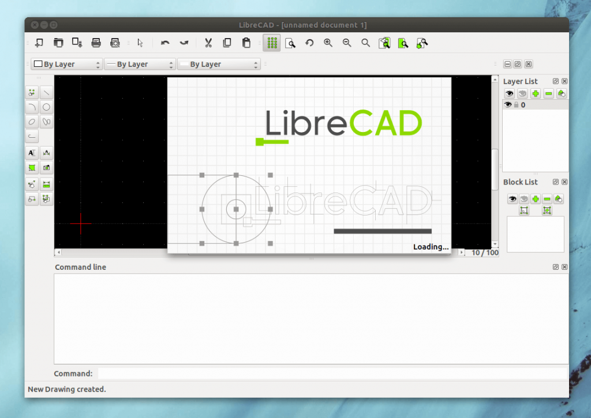

LibreCAD - это свободная 2D-CAD с открытым исходным кодом и графическим интерфейсом на основе Qt4, поэтому на разных платформах она может выглядеть немного по-разному. Разработка программы началась с форка QCAD под названием CADuntu. Сейчас программа содержит множество инструментов для создания 2D-моделей и доступна на более чем 30-ти языках.
